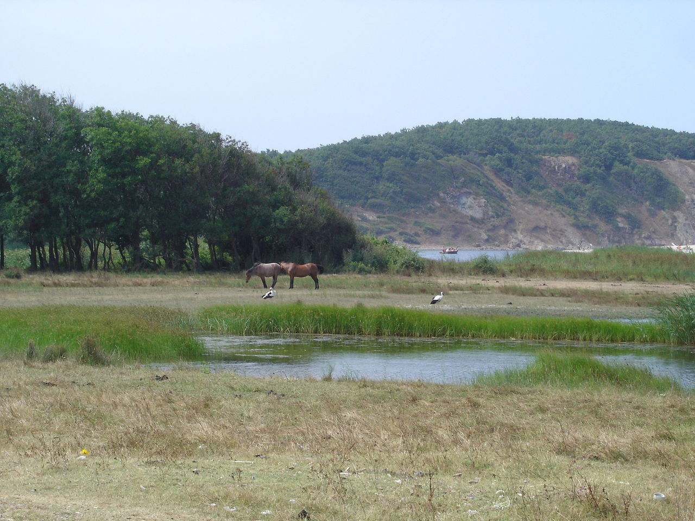

Природен парк - Странджа
 „Странджа“ е най-големият природен парк в България. Създаден е през 1995 г. Пътешествието в Природен парк Странджа възстановява пътищата към изгубения изток, разкрива биологичната съкровищница Колхида, съхранила растителни и животински видове от преди няколко милиона години и станала единствен техен дом в Европа.
Площта му е 1161 km² и обхваща централна Странджа с излаз към Черно море. Сред забележителностите са пещерите и изворите край река Младежка, пещера Еленина дупка край село Бяла вода, пещера Махарата край село Кости и мраморните куполни гробници в местностите „Мишкова нива“ и „Пропада“. В парка се срещат 54 вида бозайници и 261 вида птици.
Странджа е най-голямата защитена природна територия в България, създадена за да опазва уникалните екосистеми и биоразнообразие, както и за съхраняване на самобитните странджански фолклор, култура и историческо наследство. Нейната територия е над 1% от територията на страната. През 1933 г. именно тук е обявен първият резерват в България – Силкосия.
Защитените територии със самостоятелен статут, съгласно чл. 5 от Закона за защитените територии в парк Странджа са 32 на брой. Най-известните от тях са „Парория“, „Устие на река Велека“, „Докузак“, „Руденово“, „Силистар“, „Кривинизово“, „Моряне“, „Камъка“ и други. С Решение № 6794/29.06.2007 г. Върховният административен съд отменя статута на Странджа като защитена територия. След масови протести на природозащитници по този повод Народното събрание гласува закон, според който установените от правителството защитени територии не могат да бъдат оспорвани в съда. По този начин планината е спасена от застрояване.
Предложения за хотели в Странджа планина.